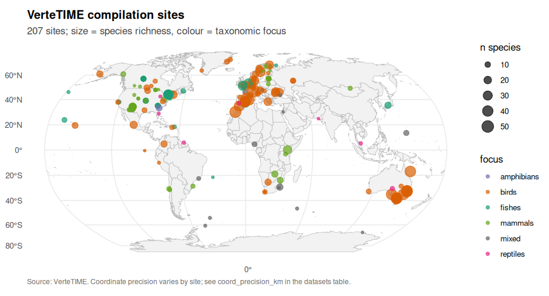
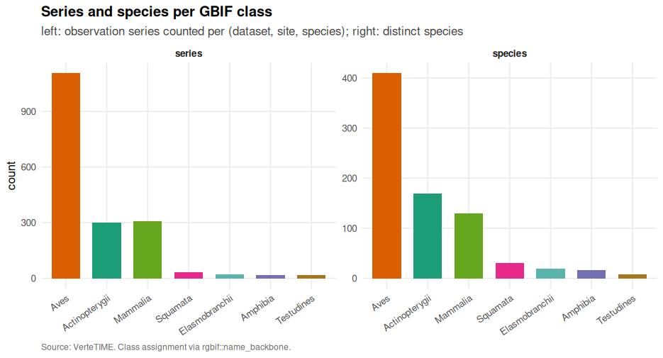
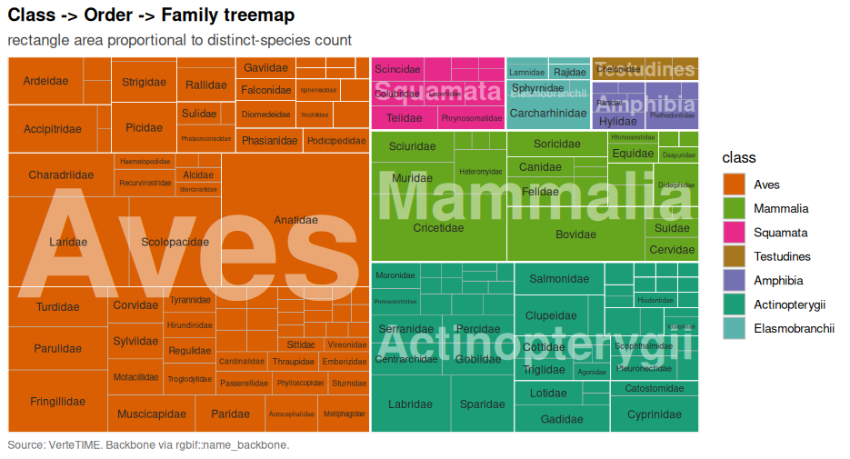
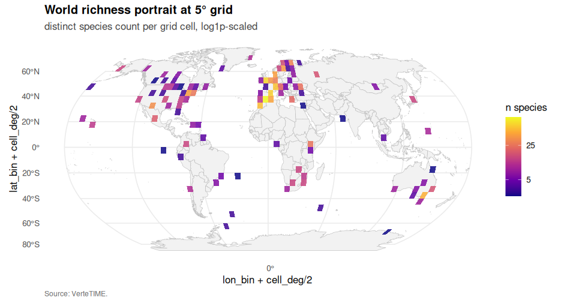
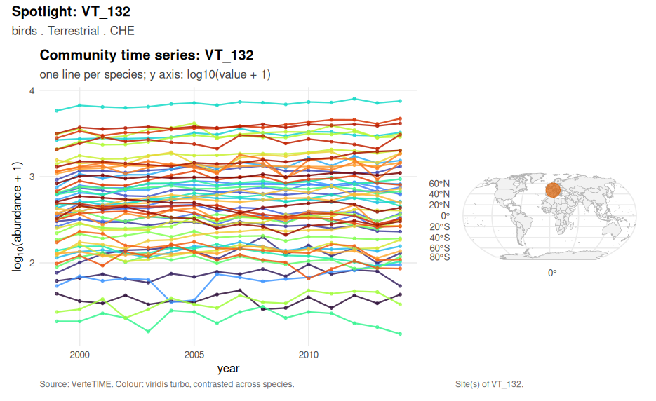
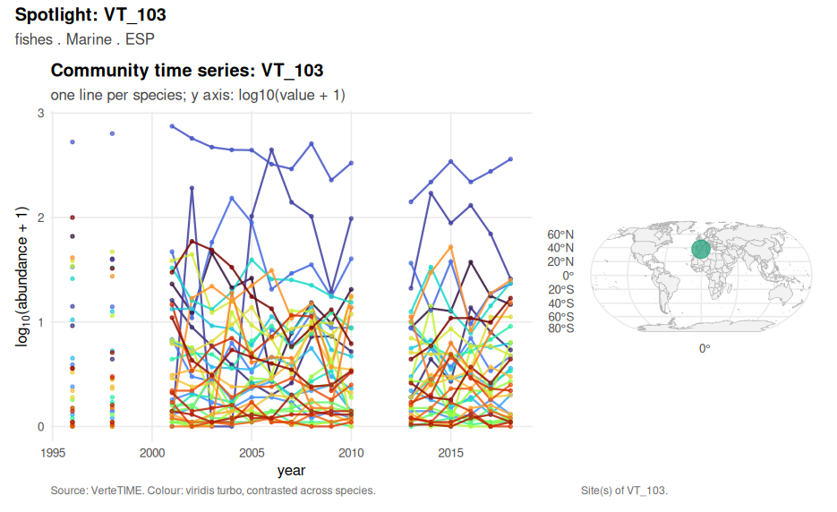
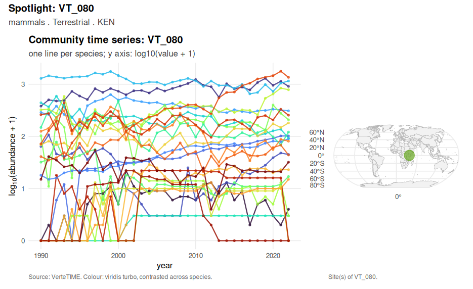
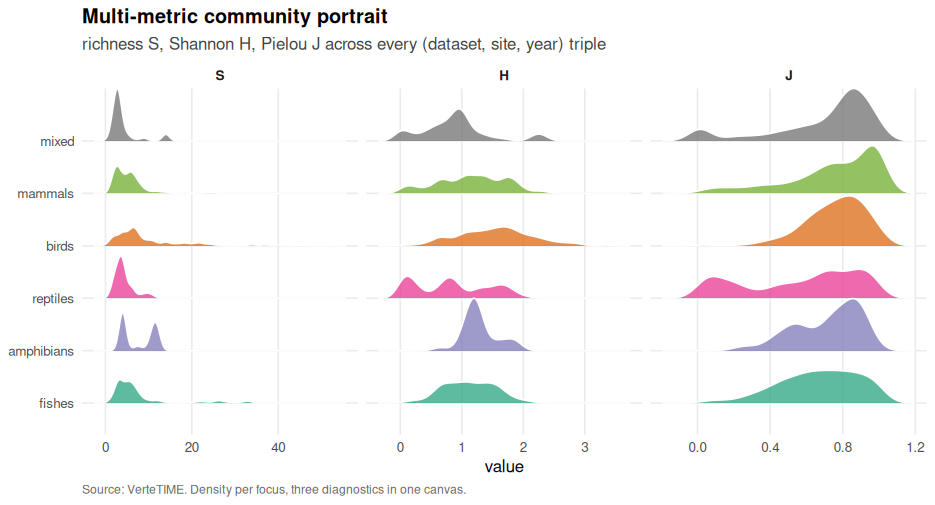
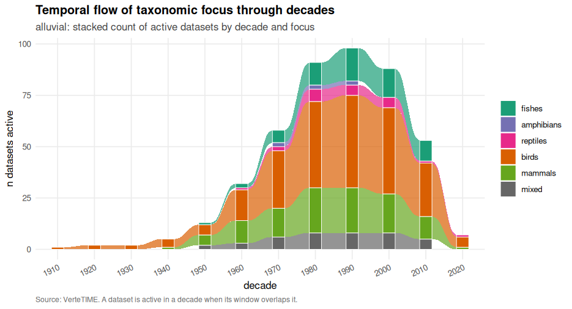
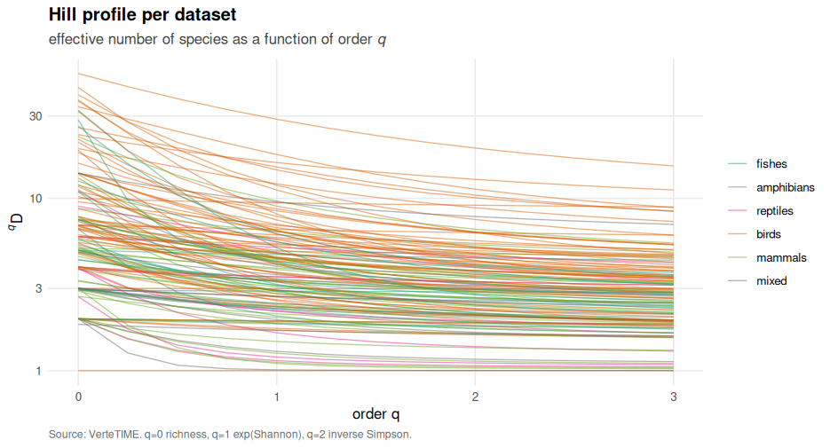

A curated repository of world vertebrate community time series
VerteTIME is a curated repository of world vertebrate community time series. The compilation bundles more than 200 per-site multi-species annual abundance series from terrestrial, freshwater and marine systems worldwide, each independently curated from peer-reviewed primary literature and grey literature. Each entry preserves the multi-species composition required for community-ecology analysis (turnover, dominance restructuring, nestedness) and, where the source documents them, the per-site environmental covariates measured on the same temporal index.
Installation
# released versions (after the first Zenodo deposit)
# install.packages("VerteTIME")
# development version from GitHub
# install.packages("remotes")
remotes::install_github("robustecologies/VerteTIME")System prerequisites: R >= 4.2. Optional packages used through Suggests enable specific features: arrow for Parquet IO, DBI and RSQLite for SQLite export, sf and rnaturalearth for the projected world map, ragg for high-quality PNG, betapart and vegan for cross-validation against established metric implementations.
Why VerteTIME
The biodiversity-time-series ecosystem is rich but heterogeneous. Population-level compilations such as the Living Planet Database support index-style aggregations at large geographic scope; community-level products such as BioTIME prioritise breadth over depth; taxon-specific compilations (RivFishTIME for riverine fish, PECBMS for European birds) optimise within one realm. The plurality is healthy, yet none of these designs is a moderately sized, peer-review-anchored, multi-taxon community-series compilation emphasising depth and traceable provenance, with a community-ecology metrics layer ready for downstream analysis. VerteTIME addresses that niche.
The compilation is small by design: every entry is verified from the primary reference, every coordinate is transcribed from the source, every primary reference is recorded by DOI. The package reduces the friction between the curated compilation and a downstream analysis workflow to a single function call.
Evolution of the landscape of biodiversity time-series compilations
![Two-panel positional comparator of biodiversity time-series compilations cited by VerteTIME. Top panel: publication-event milestones at the year of each compilation's first citable public release; each tab carries the compilation name, citation, series count and licence. The two LPI rows (LPI v1 in 2017 and LPI v2 in 2024) document the growth of the Living Planet Database from 14,152 to 34,836 populations. Bottom panel: calendar-year span of the underlying data (first observed to last observed year) per compilation. Rows have heterogeneous taxonomic scope (vertebrate-only and multi-taxon, see vt_compilations()$taxonomic_scope). The figure is positional only, never a chain of provenance; every numeric cell is anchored to the primary publication cited in the corresponding row.](reference/figures/README-fig-readme-timeline-1.png)
Two-panel positional comparator of biodiversity time-series compilations cited by VerteTIME. Top panel: publication-event milestones at the year of each compilation’s first citable public release; each tab carries the compilation name, citation, series count and licence. The two LPI rows (LPI v1 in 2017 and LPI v2 in 2024) document the growth of the Living Planet Database from 14,152 to 34,836 populations. Bottom panel: calendar-year span of the underlying data (first observed to last observed year) per compilation. Rows have heterogeneous taxonomic scope (vertebrate-only and multi-taxon, see vt_compilations()$taxonomic_scope). The figure is positional only, never a chain of provenance; every numeric cell is anchored to the primary publication cited in the corresponding row.
Geographic and taxonomic coverage

Robinson-projected world map of every site in the compilation. Point colour: taxonomic focus. Point size: species richness.

Series and species per GBIF class.

Class -> Order -> Family treemap. Rectangle area is proportional to distinct-species count.

World richness portrait at 5° grid: distinct species count per cell.
Featured community spotlights
A spotlight composes the time series of every species in a community against the site’s location on the world map. The four examples below are picked dynamically as the most-species-rich representative of each focus-realm combination.

Spotlight: largest terrestrial bird community.

Spotlight: largest marine fish community.

Spotlight: largest terrestrial mammal community.
Community structure at a glance

Multi-metric community portrait: density of richness S, Shannon H and Pielou J across every (dataset, site, year) triple, faceted by taxonomic focus.

Temporal flow of taxonomic focus across decades: stacked count of active datasets by decade.

Hill-number profile per dataset across orders 0 to 3 (q = 0 richness, q = 1 exp(Shannon), q = 2 inverse Simpson).
Five-minute tour
library(VerteTIME)
data(vertetime) # load the shipped compilation
co <- vertetime
print(co); summary(co)
vt_check() # one-call smoke test
v <- vt_validate(co, level = "compilation") # zero rows = clean compilation
a <- vt_alpha_diversity(co, indices = c("S", "H", "q1", "q2", "Chao1"))
e <- vt_evenness(co, kind = "pielou")
tt <- vt_temporal_turnover(co, method = "bray", pair = "consecutive")
bp <- vt_beta_partition(co)
nodf <- vt_nestedness(co)
# panel of compilation-wide visualisations
vt_plot_focus_bars(co)
vt_plot_top_species(co, n = 25)
vt_plot_lasagna(co, sample_n = 200)
vt_plot_active_area(co)
vt_plot_onset_cumulative(co)
vt_plot_year_ridges(co, which = "first")
vt_plot_span_hist(co)
vt_plot_span_coverage_hex(co)
vt_plot_focus_span_box(co)
vt_plot_mean_cv(co)
vt_plot_alpha_hist(co, index = "H")
vt_plot_nodf_hist(co)
# publish the public release into a user-supplied directory
vt_publish(co, root = file.path(tempdir(), "vertetime-release"), overwrite = TRUE)The vt_publish() call produces a complete public-release tree at the user-supplied root that contains the compilation in four formats (CSV, Apache Parquet, SQLite, Frictionless Data Package), the per-dataset provenance audit table, the licence text, the citation file and a SHA-256 checksum manifest.
What the package contains
Click to expand the function index
Ingestion and registration - vt_ingest_dataset() — maintainer-side single-folder ingest from a private ingestion tree - vt_ingest_all() — maintainer-side orchestrator over the full compilation - vt_register_dataset() — user-facing scaffolder for adding a private dataset to a user-supplied tree - vt_validate() — structural and semantic checks at dataset and compilation level - vt_check() — one-call smoke test that exercises every analytical family against the shipped vt_demo
Reading and reshaping - vt_read_csv(), vt_read(), vt_long(), vt_wide(), classify_columns() - S3 constructors: vt_dataset(), vt_compilation()
Alpha-diversity - vt_alpha_diversity() — richness, Shannon, Simpson, Hill numbers q=0,1,2, Chao1 - vt_evenness() — Pielou, Simpson
Beta-diversity and turnover - vt_beta_diversity() — Bray-Curtis, Jaccard, Hellinger, Whittaker multiplicative - vt_temporal_turnover() — pairwise year-by-year dissimilarity - vt_beta_partition() — Baselga (2010) turnover and nestedness components
Composition - vt_dominance_curve(), vt_rank_abundance(), vt_rarefaction(), vt_nestedness()
Aggregators and filtering - vt_community_summary(), vt_compilation_summary(), vt_filter(), vt_series_summary()
Export and publication - vt_export() — single-format export (csv, parquet, sqlite, datapackage) - vt_publish() — full publish tree with anonymisation, integrity manifest and licences
Visualisation (plotting theme) - vt_theme(), vt_palette()
Visualisation (compilation-level descriptive) - vt_plot_focus_bars(), vt_plot_top_species(), vt_plot_year_ridges(), - vt_plot_lasagna(), vt_plot_active_area(), vt_plot_onset_cumulative(), - vt_plot_span_hist(), vt_plot_span_coverage_hex(), vt_plot_focus_span_box(), - vt_plot_mean_cv(), vt_plot_alpha_hist(), vt_plot_nodf_hist()
Visualisation (community-level pattern) - vt_plot_whittaker(), vt_plot_rac(), vt_plot_alpha_timeline(), - vt_plot_beta_heatmap(), vt_plot_world_map(), - vt_plot_database_timeline() — two-panel positional comparator (publication events plus data spans) across biodiversity compilations
Data model
VerteTIME uses a five-table relational schema with an additional audit table:
| Table | Cardinality | Role |
|---|---|---|
datasets |
one row per dataset (VT_NNN) |
dataset-level metadata |
sites |
one row per spatially-distinct site within a dataset | site-level metadata, coordinates |
species |
one row per species observed | taxonomic backbone (filled in v1.1 via rgbif::name_backbone) |
observations |
long, one row per (site_id, species_id, year) |
the workhorse |
covariates |
long, one row per (site_id, year, covariate) |
environmental covariates |
data_provenance |
one row per dataset | primary-reference DOI, citation, kind |
The schema is materialised identically across CSV, Parquet, SQLite and the datapackage manifest. Foreign keys use the *_id convention consistently.
Public data release
The vt_publish() function produces a user-supplied directory tree (the root argument) with:
<root>/
csv/ per-table CSVs + master.csv (long join) + master_wide.csv (LPD-style)
parquet/ same tables as Apache Parquet, plus master.parquet
sqlite/vertetime.db single-file relational database
datapackage.json Frictionless Data Package manifest
data_provenance.csv per-dataset primary references and DOIs
README.md summary, citation, links, licence, mirror list
LICENSE.md Creative Commons Attribution 4.0 International
CITATION.cff machine-readable citation
CHECKSUMS.sha256 one-line SHA-256 per fileThe release is deposited at Zenodo (DOI updated in CITATION.cff after the deposit), mirrored at iDiv DDM and figshare with a shared CHECKSUMS.sha256 for cross-mirror verification.
Provenance and licensing
VerteTIME’s compilation copyright belongs to the authors. The series in v1.0 were curated independently from peer-reviewed primary literature and grey literature; we do not redistribute records sourced from any secondary biodiversity time-series compilation. Where some VerteTIME series partially overlap with series in other compilations, the overlap is recorded in data_provenance$partial_overlap_with and surfaced as a positional comparator in the manuscript timeline figure; it is not a chain of provenance.
The package code is licensed under GPL (>= 3); the harmonised data, vignettes, the long-form manuscript and figures are licensed under Creative Commons Attribution 4.0 International (CC-BY 4.0).
Citation
Run citation("VerteTIME") for the canonical citation string. The package also ships CITATION.cff for the Citation File Format. Per-dataset reuse must additionally cite the primary reference recorded in the data_provenance table for the dataset in question.
Limitations and mitigations
The compilation is heterogeneous in unit_class (counts, densities, biomass, indices, CPUE, breeding pairs); cross-series quantitative comparison must stratify by unit_class or focus on dimensionless community-structure metrics. Geographic coverage is presently uneven and skews towards Europe, North America and a handful of long-running tropical sites; the Robinson world map figure surfaces this skew explicitly and the coord_precision_km column documents per-site coordinate precision. Higher-rank taxonomy (class, order, family) is left empty in v1.0 and is filled in v1.1 via rgbif::name_backbone; the dataset-level taxonomic_focus is the operative attribute until then. The species$is_vertebrate flag is similarly populated in v1.1. The package does not impute internal NAs; users who need imputed series should run imputeTS::na_kalman or similar packages downstream of vt_long(). The grey-literature subset is opt-in: studies in non-English languages are under-represented relative to the body of long-term ecological observation actually conducted, and v1.1 will widen the language scope.
The is_community_metric_eligible flag (n_species >= 2 AND n_years >= 3) is a starting point but not a substitute for careful per-analysis filtering. We deliberately do not apply implicit dataset filters: the compilation is loaded in full, and metrics that are mathematically undefined on small communities are computed conditionally with explicit NAs rather than silent dataset exclusion.
Adding a new dataset
vt_register_dataset(id, data_raw, dry_run) is a user-facing scaffolder. The user picks any folder for data_raw (their private extension tree), runs vt_register_dataset(id, data_raw, dry_run = TRUE) to scaffold the YAML sidecar from system.file("templates", "dataset_template.yaml", package = "VerteTIME"), drops the wide-format CSV at <data_raw>/<id>/<id>.csv, re-runs with dry_run = TRUE to inspect validation, and finally runs with dry_run = FALSE to commit. The vignette vt-ingestion-workflow walks through the workflow; system.file("templates", "register-checklist.md", package = "VerteTIME") is a printable pre-flight checklist.
Comparison with related compilations
VerteTIME is positioned among the major biodiversity time-series compilations of the field as a comparator only. The vt_plot_database_timeline() function renders the comparison in two panels: a milestone timeline of publication events (one marker per compilation at its first citable release, with a labelled tab carrying citation, series count and licence) and a Gantt of the calendar-year span of the underlying data per compilation. Compilations referenced (non-exhaustive): GPDD, the Living Planet Database (LPI), BioTIME (v1 2018, v2 2025), RivFishTIME, PREDICTS, the North American BBS, PECBMS, CBC, eBird Trends, TEAM and its Wildlife Insights successor. The taxonomic scope of each entry is heterogeneous (vertebrate-only and multi-taxon, see vt_compilations()$taxonomic_scope); the figure caption is explicit that overlap is shown for orientation only, never as a chain of provenance. Every numeric cell is anchored to the primary publication cited in the corresponding row.
Authors
-
Sergio Picó — corresponding author and maintainer. ORCID 0000-0002-4016-4670. Email
spicjor@pm.me. -
Pablo Almaraz — corresponding author and maintainer. ORCID 0000-0003-1416-2695. Email
pablo.almaraz@csic.es.
Disclaimer
This package is the original creation of the author in all conceptual, theoretical, and design aspects. Implementation was assisted by Anthropic’s Claude Code v.2 (Opus 4.5-4.7) to streamline package development. All original ideas, creativity, and scientific contributions belong to the author, who maintains full responsibility for the package’s correctness and reliability. All the code has been thoroughly tested, and users are encouraged to report any issues through the package’s issue tracker.